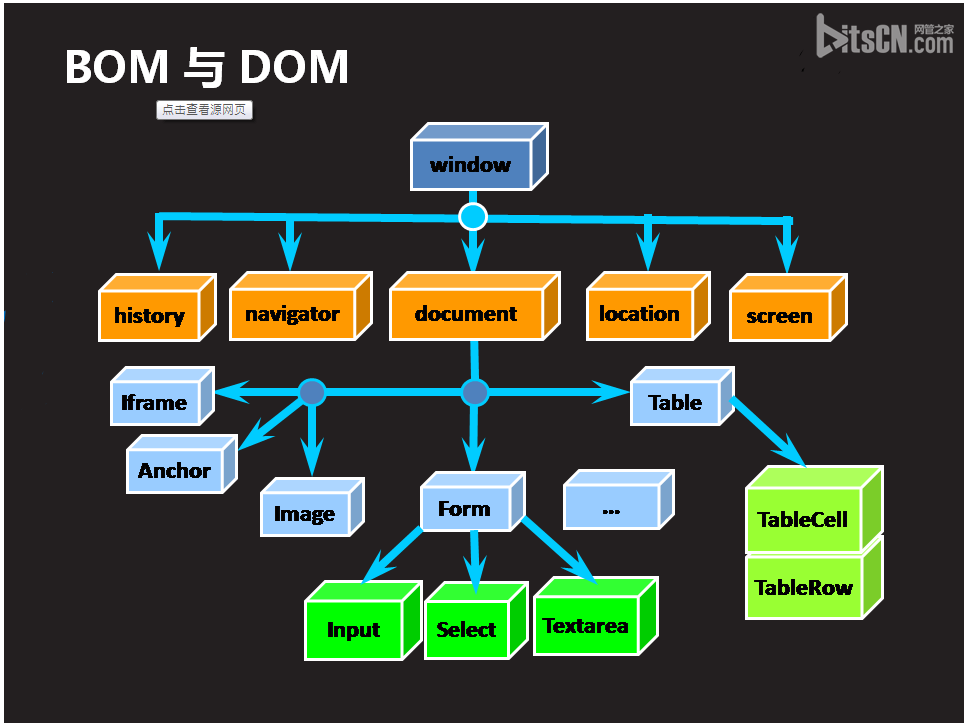

透過影片了解DOM 名詞
w3c JavaScript reference documentation
JavaScript
- Java是Sun的產品；JavaScript是Netscape的產品
- 優點是可以在client端執行部分運算，減少server端的負荷
- 缺點是若client端的JavaScript功能關閉，若網頁有使用JavaScript的功能，將無法運作。
- w3c JavaScript Tutorial
DOM 定義了用於 HTML 的一系列標準的物件，讓處理 HTML 有相同的標準方法。
